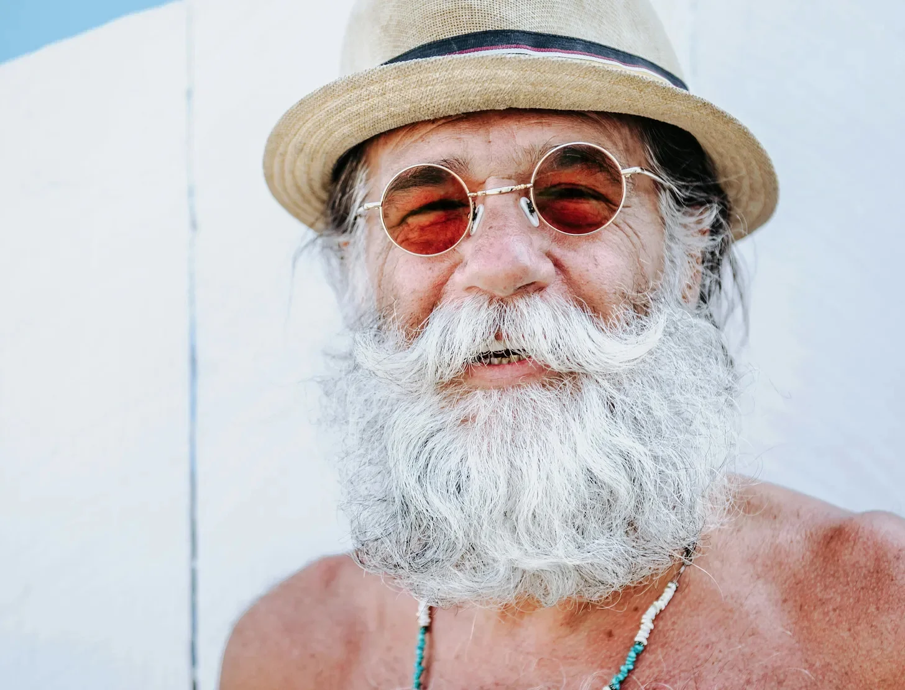

장밋빛 안경은 단순한 장식이 아니었다. 그것은 그가 세상을 더 따뜻한 색조로 물들이는 그만의 방식이었다. 하얀 벽을 배경으로, 그의 은빛 수염은 달빛 비친 파도처럼 일렁였고, 각각의 머리카락은 꿈을 좇았던 여름과 폭풍을 견뎌냈던 겨울의 이야기를 들려주고 있었다.
[The rose-tinted glasses weren’t just for show; they were his way of painting the world in warmer hues. Against the stark white wall, his silver beard rippled like moonlit waves, each strand telling tales of summers spent chasing dreams and winters weathering storms.]
햇볕에 그을린 그의 목에 걸린 구슬 목걸이는 웃을 때마다 부드럽게 달그락거렸고, 청록색 돌들은 먼 해변의 추억처럼 구릿빛 피부 위에서 춤추었다.
[The beaded necklace around his sun-kissed neck clicked softly with each laugh, turquoise stones dancing against bronze skin like memories of distant shores.]
살짝 기울어진 각도로 쓴 그 밀짚모자는 이제 단순한 모자 이상이었다. 그것은 나이 듦에 대한 우울한 기대에 맞서는 저항의 표현이었다.
[That straw fedora, worn at just the right rakish angle, had become more than a hat – it was a statement of defiance against the somber expectations of aging.]
그 모자의 띠는 짙고 품위 있었으며, 장밋빛 렌즈 뒤에 숨은 장난스러운 반짝임과 잘 어울렸다. 말없이도 많은 것을 전달하는 반항과 스타일의 완벽한 조화였다.
[Its band, dark and dignified, matched the playful gleam behind those rose-colored lenses, a perfect partnership of rebellion and style that spoke volumes without saying a word.]
그의 눈가 주름은 시간이 흘러간 흔적이 아니라 기쁨의 자국이었다. 수십 년 동안 석양을 바라보며 눈을 찡그리고 인생의 부조리함에 미소 지으며 새겨진 것이었다.
[The wrinkles around his eyes weren’t marks of time’s passage but rather tracks of joy, carved by decades of squinting into sunsets and grinning at life’s absurdities.]
여름 정원처럼 거칠고 길들여지지 않은 그의 수염은 사회가 선호하는 깔끔하게 다듬어진 가장자리를 거부했다. 대신 겨울 창문의 서리 무늬처럼 퍼져나갔고, 각각의 곱슬거림과 물결은 자신만의 길을 주장했다.
[His beard, wild and untamed as a summer garden, refused to conform to the neat trimmed edges society preferred, instead spreading like frost patterns on a winter window, each curl and wave asserting its own path.]
그의 부드러운 미소 곡선에는 행복이 목적지가 아닌 여행하는 방식이라는 것을 오래전에 깨달은 사람의 지혜가 숨어 있었다.
[In the gentle curve of his smile lurked the wisdom of someone who had long ago discovered that happiness wasn’t a destination but a way of traveling.]
그의 장밋빛 안경을 통해 보는 세상은 망상이 아니었다. 그것은 의식적인 선택이었다. 아름다움을 먼저 보고, 평범한 것에서 경이로움을 찾으며, 획일성에 맞서 자신의 괴짜스러움을 자랑스럽게 드러내는 매일의 결정이었다.
[The rose-tinted world through his glasses wasn’t delusion – it was a conscious choice, a daily decision to see beauty first, to find wonder in the ordinary, and to wear his eccentricity like a badge of honor against the backdrop of conformity.]
어떤 이들은 그를 해변의 부랑자라 불렀고, 또 어떤 이들은 보헤미안 현자라 불렀지만, 그런 꼬리표들은 오리 등에서 물이 흘러내리듯 그에게서 흘러내렸다.
[Some called him a beach bum, others a bohemian sage, but those labels slid off him like water from a duck’s back.]
맨발로 모래사장을 걸으며 일출을 맞이하고 늘 그 밀짚모자를 쓰는 그의 일상적 의식은 세 번의 결혼과 두 번의 직업, 그리고 자녀들의 수없이 많은 “안정되라"는 설득을 견뎌냈다.
[His daily ritual of greeting the sunrise with bare feet in the sand and that ever-present straw fedora had outlasted three marriages, two careers, and countless attempts by his children to "settle him down.”]
장밋빛 유리를 통해 세상이 그토록 멋진 색채를 계속 펼쳐 보이고, 매일 아침 해변가에 새로운 보물들이 밀려오며, 그의 길들여지지 않은 수염이 짭짤한 바닷바람의 안식처가 되었는데 어떻게 안주할 수 있겠는가?
[But how could anyone settle when the world kept spinning such magnificent colors through rose-tinted glass, when every morning brought new treasures washed up on the shore, and when that untamed beard of his had become home to so many salty sea breezes?]